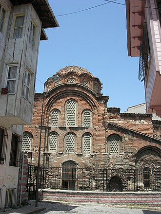

Presentation
L’actuelle mosquée Eski İmaret, à Istanbul (Turquie) est une ancienne église orthodoxe ayant fait partie du monastère du Christ Pantépoptès, transformée en mosquée par les Ottomans après la chute de Constantinople. Elle est la dernière église du XIe siècle encore intacte à Istanbul, et constitue ainsi un monument-clé pour l'étude de la période intermédiaire (843-1204) de l'architecture byzantine.
يُعد مسجد إسكي عمارة كنيسة سابقة من عهد الـ إمبراطورية البيزنطية حوّلها الـ العثمانيون إلى مسجد. عُرفت الكنيسة تقليدياً بأنها تنتمي إلى دير المسيح بانتيبوبتس ، ومعناها «المسيح الضابط للكل». وهي الكنيسة الوحيدة الموثقة من القرن الحادي عشر في إسطنبول التي لا تزال قائمة وسليمة، وتمثل معلماً رئيسياً لمنتصف الـ عمارة البيزنطية. ورغم ذلك، فإنها تظل من بين أقل المباني دراسة في المدينة.
The Eski Imaret Mosque is a former Byzantine church converted into a mosque by the Ottomans. The church has traditionally been identified as belonging to the Monastery of Christ Pantepoptes, meaning "Christ the all-seeing". It is the only documented 11th-century church in Istanbul which survives intact, and represents a key monument of middle Byzantine architecture. Despite that, it remains among the least studied buildings in the city.
Eski İmaret Camii veya Pantepoptes Manastırı Kilisesi İstanbul'un Zeyrek semtinde Doğu Roma döneminden kalma dinî yapıdır. 1081- 1087 yılları arasında inşa edildiği tahmin ediliyor.
Masjid Eski Imaret atau yang awalnya bernama Biara Pantepoptes adalah sebuah bekas masjid peninggalan Bizantium yang berada di distrik Fatih, Provinsi Istanbul, Turki. Bangunan ini awalnya merupakan bekas gereja Bizantium, sebelum diubah menjadi masjid oleh Ottoman. Awalnya bangunan ini adalah satu-satunya gereja abad ke-11 yang terdokumentasi masih utuh di Istanbul, dan merupakan monumen utama yang berarsitektur Bizantium tengah. Namun masjid ini sudah tidak digunakan lagi dan diubah menjadi museum oleh Pemerintah Turki.
Die Eski-İmaret-Moschee ist eine ehemalige byzantinische Kirche in Istanbul, die zur Moschee umgewidmet wurde. Die Kirche gilt als zugehörig zu dem Kloster Christos Pantepoptes. Es ist die einzige erhaltene Kirche des 11. Jahrhunderts in Istanbul und Zeugnis der mittleren Epoche der byzantinischen Architektur.
La mezquita de Eski Imaret es una antigua iglesia ortodoxa oriental convertida en mezquita por los otomanos. La iglesia se ha identificado tradicionalmente con la perteneciente al Monasterio de Cristo Pantepoptes, que significa «Cristo que todo lo ve». Es la única iglesia del siglo XI documentada que sobrevive intacta, y representa un monumento clave de la arquitectura bizantina media. A pesar de ello, el edificio sigue siendo uno de los menos estudiados de la ciudad.
La moschea Eski Imaret è una ex chiesa ortodossa convertita in moschea dagli Ottomani, situata a Istanbul, in Turchia. La chiesa è stata tradizionalmente identificata con quella appartenente al monastero di Cristo Pantepoptes, con il significato di "Cristo che tutto vede". Essa è l'unica chiesa di Costantinopoli dell'XI secolo pervenuta intatta, e rappresenta un documento chiave dell'architettura bizantina del periodo intermedio. Nonostante ciò, l'edificio rimane uno tra i meno studiati della città.
老粥厂清真寺 是一座历史悠久的清真寺，位于土耳其伊斯坦布尔法提赫区贫穷的泽伊雷克街区，在泽伊雷克清真寺西北不足1公里。原为建于11世纪的东正教教堂，属于“基督全见修道院”，奥斯曼帝国将其改为清真寺（约1500至1546年）。
Церковь Христа Пантепопта — единственная церковь XI века, сохранившаяся в Стамбуле. Построена не позднее 1087 г. по инициативе Анны Далассины, основавшей на четвёртом холме Константинополя женский монастырь, освящённый в честь Пантепопта. Во время латинского владычества в Константинополе (1204-61) монастырём заправляли бенедиктинцы. После падения Константинополя в церкви разместились медресе близлежащей мечети Фатих; ныне это мечеть Эски Эмарет.
På kartan
Dokument och länkar
- Wikipédia — Français
- Wikipédia — العربية
- Wikipédia — English
- Wikipédia — Türkçe
- Wikipédia — Bahasa Indonesia
- Wikipédia — اردو
- Wikipédia — Deutsch
- Wikipédia — Español
- Wikipédia — Italiano
- Wikipédia — 中文
- Wikipédia — Русский
- Wikidata — Q2410449
Data: Wikidata (CC0), uppdateras var tredje månad. Året är byggnadens tidigaste kända byggdatum: för en byggnad som blev moské senare (som Hagia Sofia) är det den ursprungliga byggnadens. Foton: Wikimedia Commons, upphovsperson och licens på varje fotos sida.